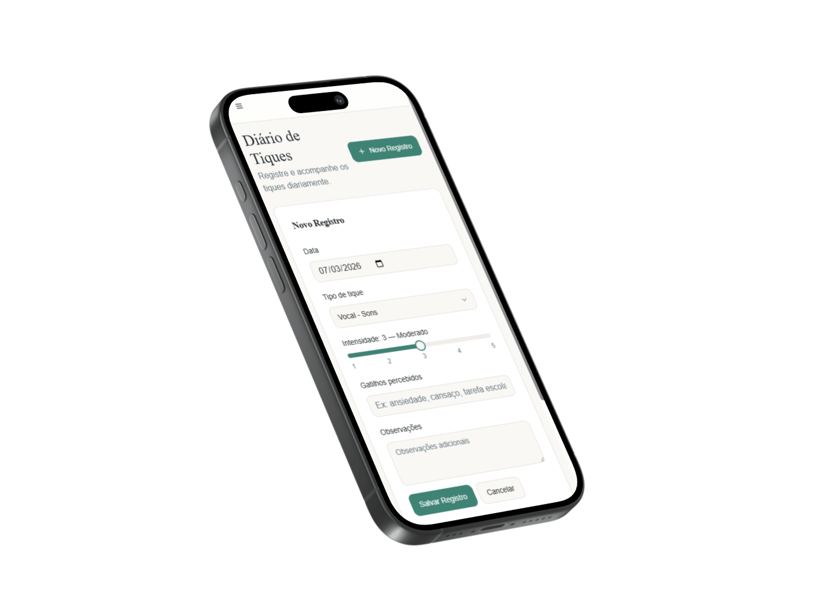
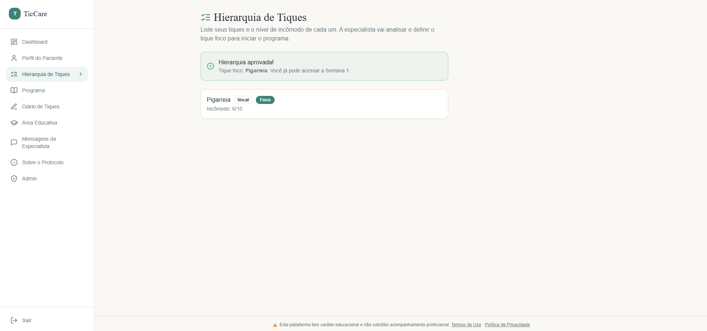
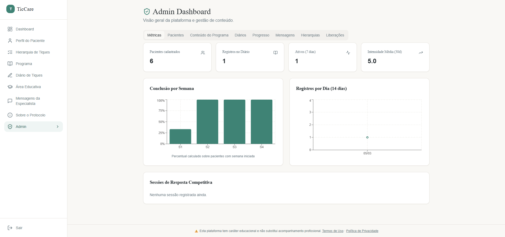

Context
TicCare was designed to support patients and families in understanding and managing tic behaviors over time. The system adapts to different age groups, adjusting both content and language to match the user's context.
Problem
Tracking tics is often inconsistent, subjective and difficult to interpret. Additionally, the same information is not equally understandable for children, adults or caregivers. This creates gaps in communication and reduces the effectiveness of treatment.
Solution
TicCare combines structured tracking with adaptive guidance. Based on user input, the system organizes priorities and adjusts content dynamically — including language, depth and recommendations — according to age and context. This ensures the experience remains accessible for children and useful for adults and specialists.
Product Decisions
Minimal registration
Tracking needed to be fast and repeatable. The system prioritizes a minimal set of inputs (intensity, type, trigger) to reduce friction and increase consistency over time.
Hierarchy before action
Users often don't know where to focus. The system organizes tics by priority before suggesting any action, guiding attention instead of overwhelming the user.
Age-adaptive system
Children, adults and caregivers interpret information differently. Instead of a single interface, the system adapts language, tone and content based on the user's age and responses.
Context-driven content
Static recommendations often feel generic and disconnected. Content is generated and adjusted based on user input, ensuring relevance to the current situation. AI is used as a support layer to adapt content dynamically.
Design Decisions
The interface was designed to reduce cognitive load for younger users while maintaining clarity for adults. Visual hierarchy, spacing and language were simplified to ensure accessibility across age groups.
Reduced input complexity
Users needed to register tics frequently, often in real-life situations. Complex forms caused friction and reduced consistency over time. The interface was simplified to a small set of essential inputs, making tracking fast and repeatable.
Age-adaptive interface
Children and adults process information differently — both visually and linguistically. A single interface created confusion or disengagement depending on the user. The interface adapts language, tone and visual complexity based on age, ensuring accessibility across user types.
Progressive disclosure of information
Showing too much information at once overwhelmed users, especially younger ones. At the same time, hiding too much limited usefulness for caregivers and specialists. Information is revealed progressively, allowing simple interaction first and deeper understanding when needed.
Visual hierarchy for quick interpretation
Users needed to quickly understand patterns and progress without deep analysis. Flat or dense layouts made interpretation slow and effortful. Clear visual hierarchy was applied to highlight intensity, frequency and progress, reducing cognitive load.
Trade-offs
Personalization vs. Consistency
Adapting content dynamically increases relevance but reduces uniformity. The system balances this by keeping structure consistent while allowing content to vary.
Simplicity vs. Depth
A simpler interface improves usability, but limits the amount of information shown at once. The system prioritizes clarity and progressive disclosure.
Interface
Dashboard
Overview of patient progress and intensity indicators.

Tic Diary
Daily register used by the patient to track episodes, intensity and possible triggers.

Tic Hierarchy
Tool used to organize and prioritize behaviors before the program begins.

Admin Dashboard
Administrative panel used by the specialist to monitor patients and analyze platform data.
